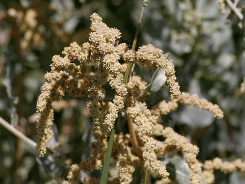
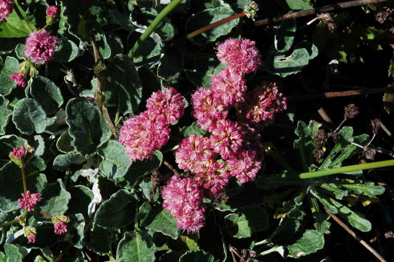
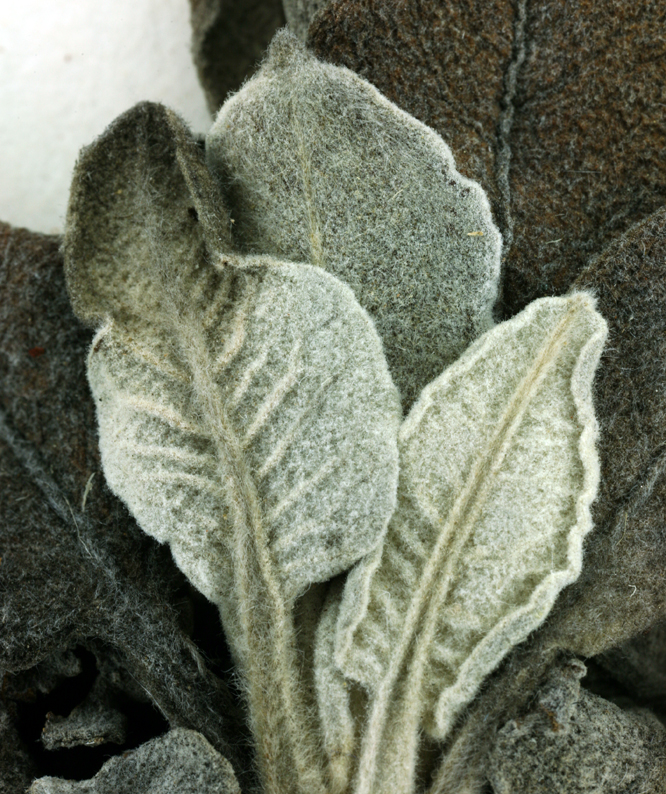

Plants upcoming: Corethrogyne filaginifolia, salvia apiana, frangula californica, atriplex lentiformus, Eriogonum wrightii, Malosma laurina, Eriogonum fasciculatum, stephanomeria chichorea
| image | common name | scientific name | growing environment | description |
|---|---|---|---|---|
| |
Palmer's indian mallow | Abutilon palmeri | Grows best in full sun or partial shade in well-draining soil | It's a fast-growing shrub that's native to the deserts of western Arizona, eastern California, and Baja California. |
|
Big sagebrush | Artemisia Tridentata | This plant thrives in full sun and well-drained soil, is nitrogen-fixing, and is drought-tolerant. | Big Sagebrush (Artemisia tridentata) is a dense, silvery-gray shrub with an upright form, growing up to 4 feet tall and wide. Its highly aromatic foliage lasts year-round, and, unlike other sages, it develops a true woody trunk and branches, making it long-lived. In maturity, the twisted trunk adds unique visual appeal. The flowers, small and yellow-green, are often inconspicuous |
|  | big saltbush | Atriplex lentiformis | This hardy shrub thrives in full sun and well-drained soil. | Big saltbush (Atriplex lentiformis) is a fast-growing, highly branched shrub with scaly gray-green leaves. In summer or fall, it produces creamy-white flowers arranged in tassel-like clusters. Typically reaching 3 to 9 feet in height and spreading even wider, it forms a dense, bushy structure. Maximum height is achieved in areas with abundant soil moisture. |
|  | Red-flowered buckwheat | Eriogonum grande var. rubescens | It does best in full sun with a small amount of supplemental summer water. | This petite, attractive buckwheat originated on California's Channel Islands, but has become a popular landscape plant throughout the state. Its rosy-colored flower clusters rise above low-growing foliage and bloom from spring to fall. The flowers attract a variety of pollinators, especially butterflies. After blooming, the seeds provide food for birds. |
|  | Santa Barbara Island buckwheat | Eriogonum gigantium var. compactum | Santa Barbara Island buckwheat grows in full to partial sun, well-draining, rocky soil, and is drought-tolerant. | Santa Barbara Island buckwheat is a small, semi-evergreen shrub with white-woolly leaves and clusters of white to rose flowers. It's native to Santa Barbara Island, California, and is a vital pollinator for local insects and butterflies. |
| California buckwheat | Eriogonum fasciculatum | |||
| coffeeberry | frangula californica | |||
| long leaf lupine | Lupine longifolius | |||
| Bladderpod | Peritoma arborea | |||
| Sugar Bush | Rhus Ovata | |||
| white sage | Salvia Apiana | |||
| Purple sage | Salvia leucophylla | |||
| Black sage | Salvia mellifera | |||
| Common snowberry | Symphoricarpos albus | |||
| Coyote bush | Baccharis pilularis | |||
| Coyote bush | Baccharis pilularis "pigeon point" | |||
| / | Ceanothus sp. | |||
| Big pod ceanothus | Ceanothus megacarpa | |||
| Chaparral whitethorn | Ceanothus leucodermis | |||
| Toyon | Heteromeles arbutifolia | |||
| Malva Rosa | malva assurgentiflora ssp. glabra | |||
| purple three awn | Aristida purpurea | |||
| Giant wild rye | Elymus condensatus | |||
| deergrass | Muhlenbergia rigens | |||
| Deerweed | Acmispon glaber | |||
| Narrow leaf milkweed | Asclepias fascicularis | |||
| southern california milkvetch | Astragalus trichopodus v lonchus | |||
| Coast morning glory | Calystegia macrostegia var. macrostegia | |||
| soap plant | chlorogalum pomeridianum | |||
| cultivars | Diplicus sp. | |||
| red monkey flower | Diplacus cardinale | |||
| southern bush monkey flower | Diplacus longiflorus | |||
| Red bush monkey flower | Diplacus puniceus | |||
| Bush sunflower | Encelia californica | |||
| California fuchsia | Epilobium canum | |||
| Fringed willowherb | Epilobium ciliatum | |||
| Seep Monkey Flower | Erythranthe guttata | |||
| Great valley gum plant | Grindelia camporum | |||
| Annual sunflower | Helianthus annus | |||
| chaparral yuca | Hesperoyucca whipplei | |||
| Rose mallow | Hibiscus lasiocarpos | |||
| San diego poverty weed | Iva hayesiana | |||
| Pacific Pea | Lathyrus vestitus | |||
| giant coreopsis | leptosyne gigantea | |||
| Kurapia | Lippia nodiflora "kurapia" | |||
| foothill penstemon | penstemon heterophylis | |||
| Showy penstemon | Penstemon spectabilis | |||
| california bee plant | Scrophularia californica | |||
| Blue eyed grass | Sisyrinchium bellum | |||
| White hedgeneedle | Stachys Albens | |||
| Prince's plume | Stanleya pinnata | |||
| Valley Oak | Quercus Lobata | |||
| Western redbud | Ceris occidentalis | |||
| Arroyo Willow | Salix lasiolepis | |||
| desert bluebells | Phacelia campanularia var. vasiformis |